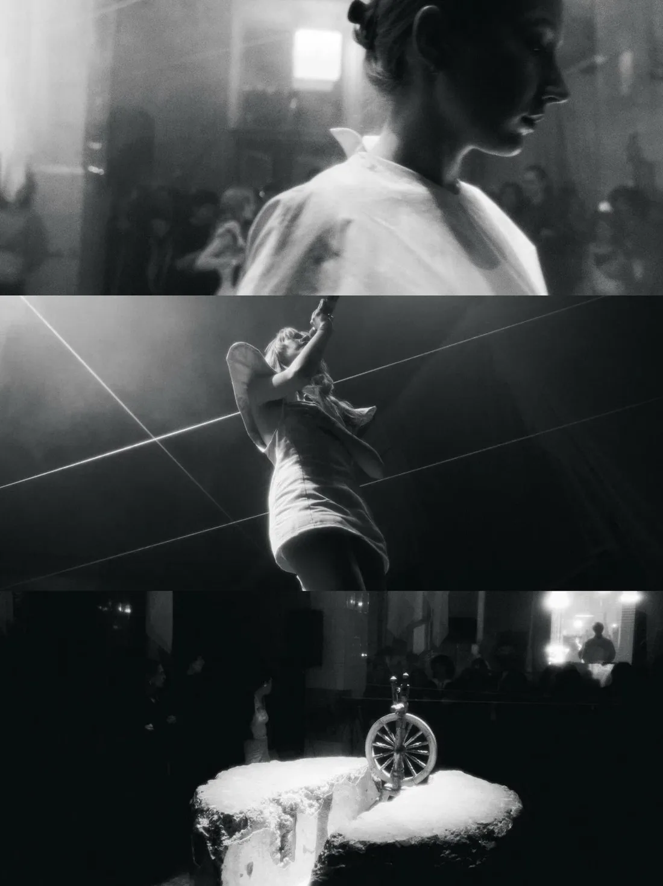
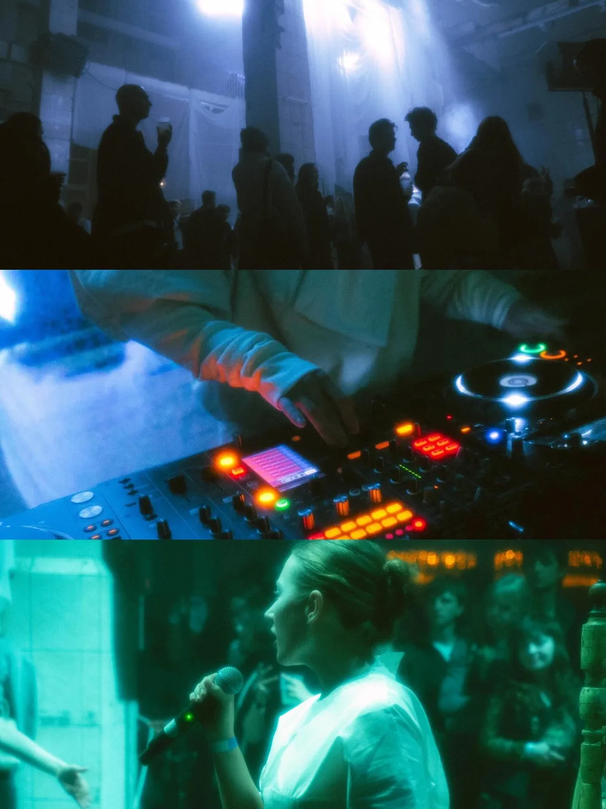
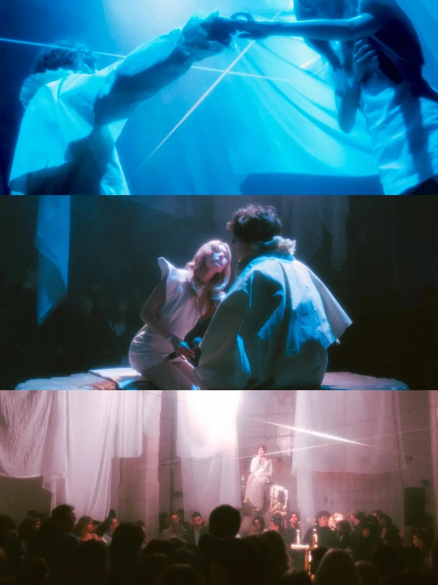

03.2026 — сейчасПроекты в культуре
Защитил магистерскую в НИУ ВШЭ. Спродюсировал нео-оперу «Дафнис и Хлоя» в галерее fābula (500+ человек). В данный момент моя работа выставлена в галерее на Винзаводе в рамках выставки «Что ты сделал для хип-хопа в свои годы». Организовал сцену ethereal grooves на фестивале Signal с 7 артистами. Сейчас занимаюсь менеджментом и продюсированием в музыкальной индустрии.

